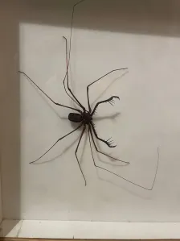
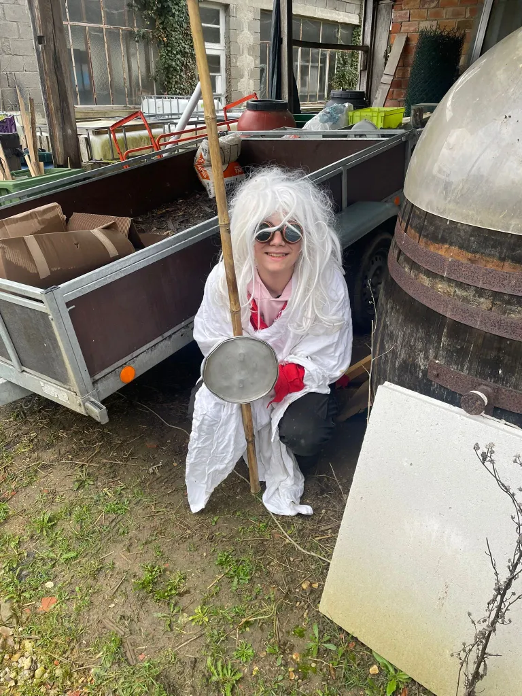
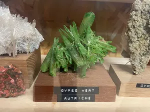

Aujourd'hui, nous, les scouts, avons vécu une journée riche en découvertes, en apprentissages et en aventures !
La matinée a commencé par un atelier particulier : nous avons taillé des bambous en forme de cuillère, de A à Z, en plusieurs temps répartis dans la journée. Cette activité nous a permis de réfléchir à la vertu de la persévérance lors d'un temps spirituel, tout en mettant en pratique la patience et la minutie.
Ensuite, nous avons été chaleureusement accueillis par le musée d'histoire naturelle de Villefranche-Saint-Phal, à Charny. Là, nous avons pu admirer une collection impressionnante d'animaux et approfondir nos connaissances sur l'univers et notre système solaire.
Le moment fort de la visite a été la découverte d'une salle exceptionnellement ouverte seulement quelques fois par an. Elle renfermait de nombreux animaux fascinants : serpents, grenouilles et bien d'autres créatures étonnantes qui ont suscité notre curiosité.
Nous avons également pris le temps de travailler sur notre progression personnelle, chacun réfléchissant à ses propres apprentissages, à ses réussites et aux objectifs qu'il souhaite atteindre dans les semaines à venir.
La journée s'est conclue par le conseil entre les groupes, puis par un goûter bien mérité qui nous a permis de reprendre des forces avant le retour.
Cette journée nous a rappelé l'importance de la persévérance, de la curiosité et du partage.
Fatigués mais heureux, nous sommes repartis avec de nouveaux souvenirs et des étoiles plein les yeux, impatients de poursuivre nos aventures ensemble.
Par les reporters des équipes bleues


